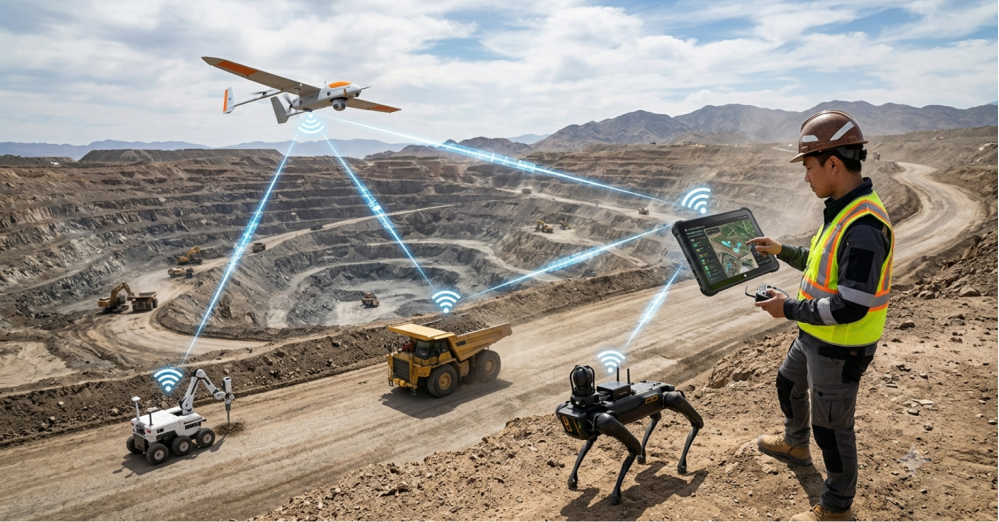
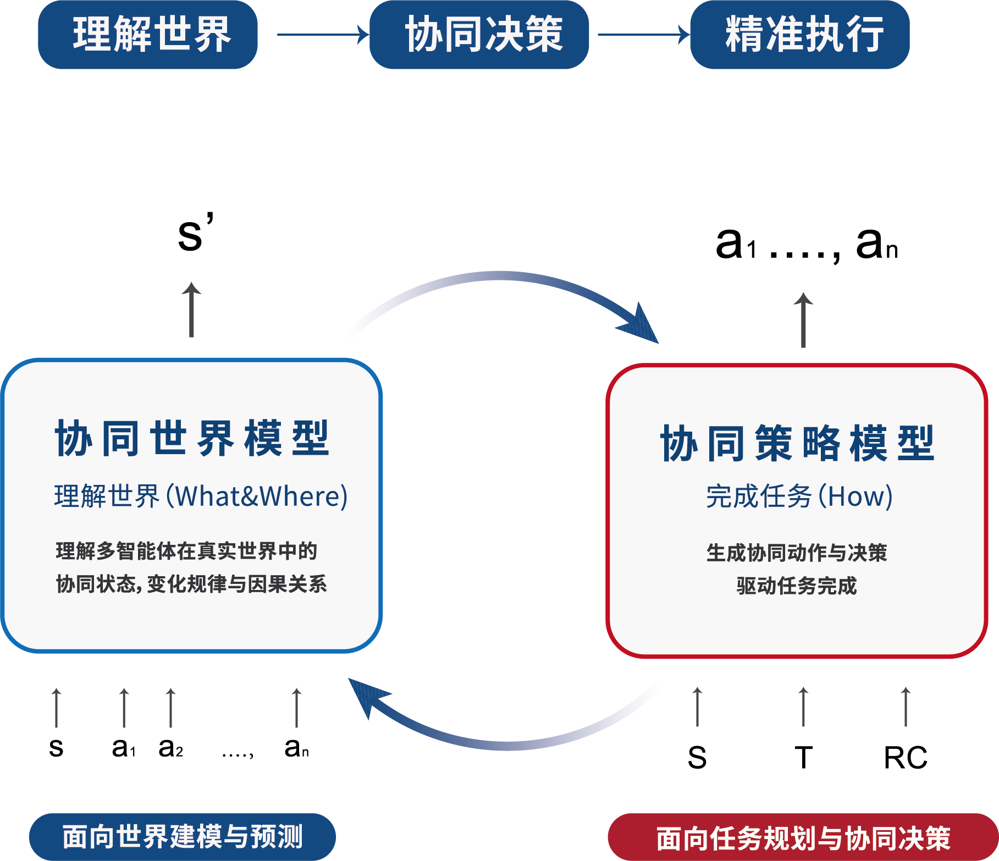
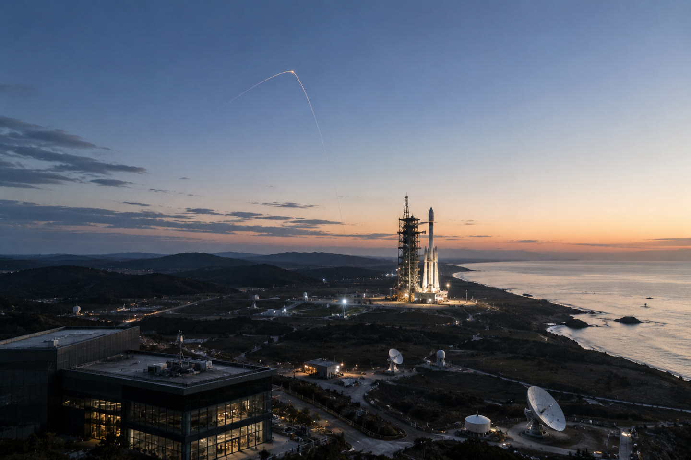
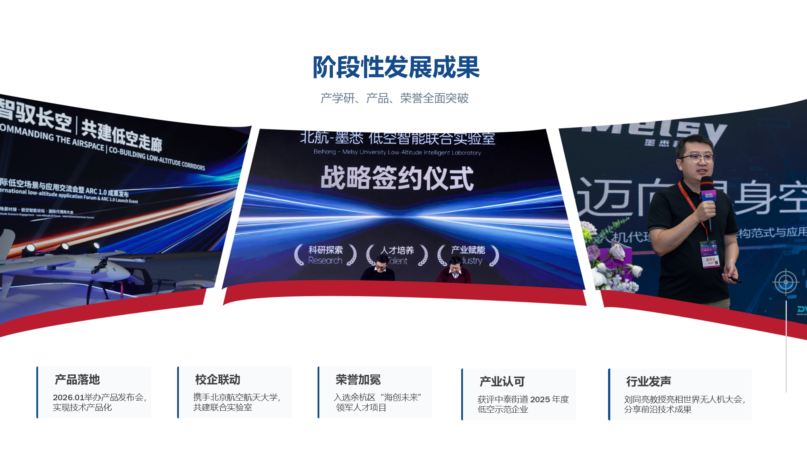

协同智能时代 Collaborative Intelligence Era
在统一时空中建立多体协同机制，围绕全局任务动态协调认知、决策与执行。
关键跃迁：从“更多智能体”走向“一个可协同演化的任务系统”。
Melsy Technology · Physical AI
墨悉构建协同世界模型，让无人机、机器人、机器狗与无人船等智能体，在真实约束下共同感知、决策与执行。
连接智能体 · 连接真实世界 · 连接未来产业
真实任务不只需要单体智能，更需要多个智能体在通信、能源、算力、位置与时间等约束下，形成统一认知并协同行动。

在统一时空中建立多体协同机制，围绕全局任务动态协调认知、决策与执行。
关键跃迁：从“更多智能体”走向“一个可协同演化的任务系统”。

FROM MODEL TO MISSION 将协同世界模型带入低空安全、无人巡检与智能工业制造。
空间训练场完成仿真与策略迭代，COS 负责感知、决策与任务编排，碎蜂承担真实世界的低空安防执行与验证。
面向 1000m 以下低空场景的高保真仿真与任务验证平台。以空间重建、物理与因果真实性建模、噪声处理和真实迁移为基础，支持多机协同仿真、策略训练与任务验证。
围绕边缘计算与协同决策，融合多源感知、动态航迹规划和实时任务调度，将环境信息与模型输出转化为可执行的协同方案。
由传感、计算、通信模组与高速响应终端构成，支持目标识别、跟踪预测和协同处置，为低空安全任务提供软硬一体的执行与验证能力。
以协同世界模型连接不同智能体和任务系统，为复杂环境提供可训练、可编排、可执行的智能能力。
支持室内外自主定位建图、设备状态检索、自动化巡检与路径优化。
支持空地一体连续作业、异常识别预警、人机协作与安全避障。
融合空海、空地多域感知与动态避障，完成协同巡检与快速响应。

面向高速目标识别跟踪、多机编队控制与多源信息融合，支持复杂空域感知和协同任务验证。
从联合研发到现场测试，墨悉与合作伙伴共同推动协同世界模型进入真实任务。

墨悉中标北京航空航天大学自动化科学与电气工程学院仿真大模型项目，围绕协同世界模型仿真平台、多智能体任务协同决策、场景生成与行为预测推进联合验证。
商务合作、技术交流、媒体沟通或联合实验室建设，欢迎扫码关注墨悉科技，获取更多信息并与我们联系。